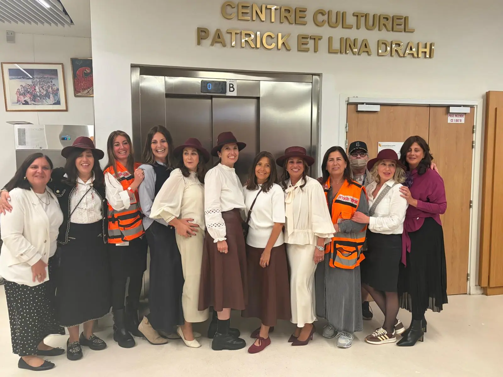
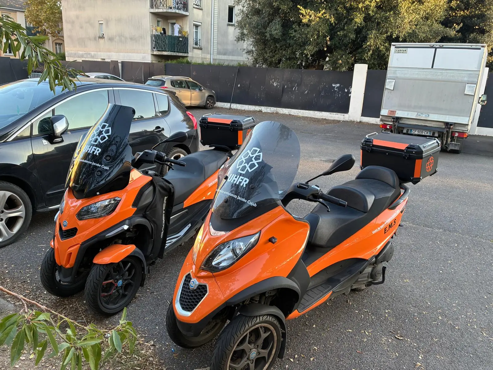
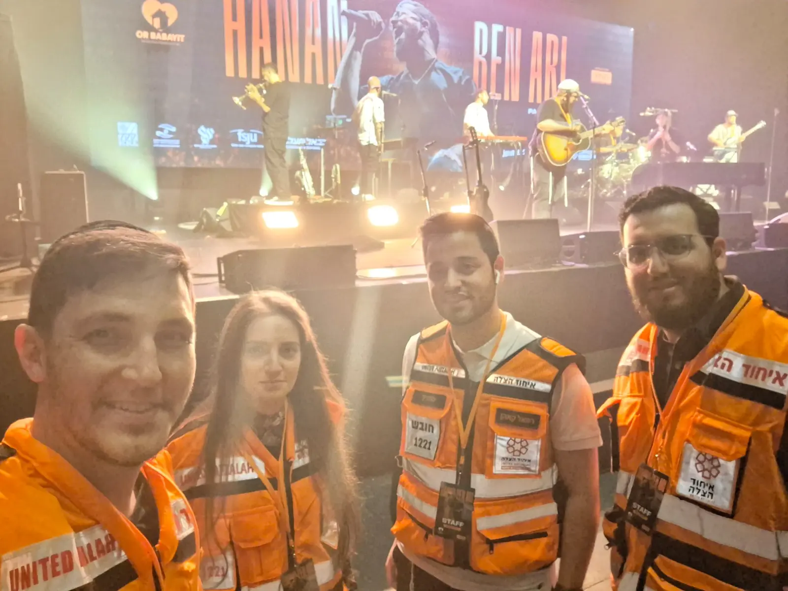
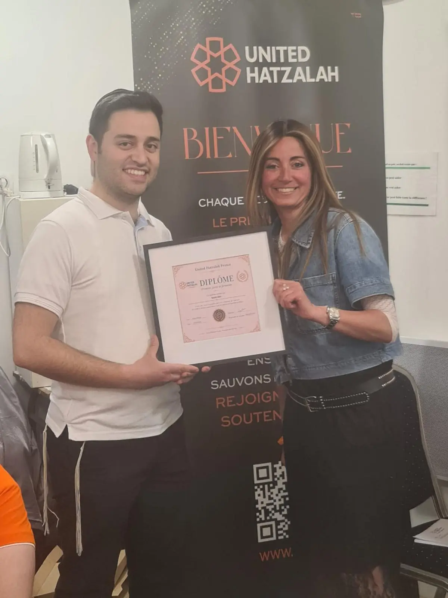
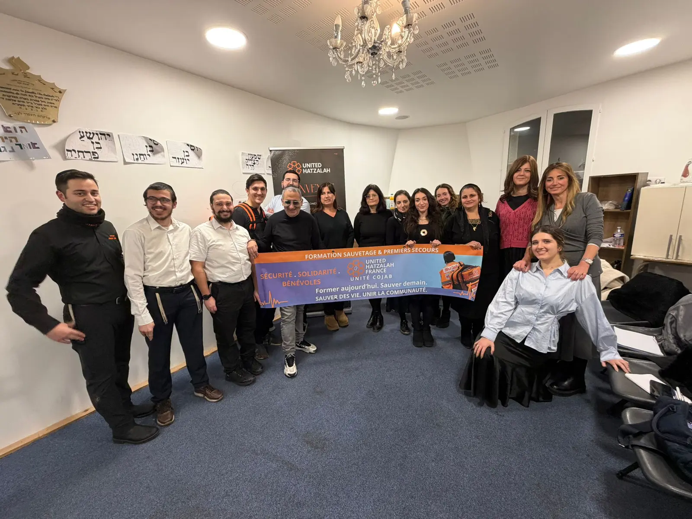
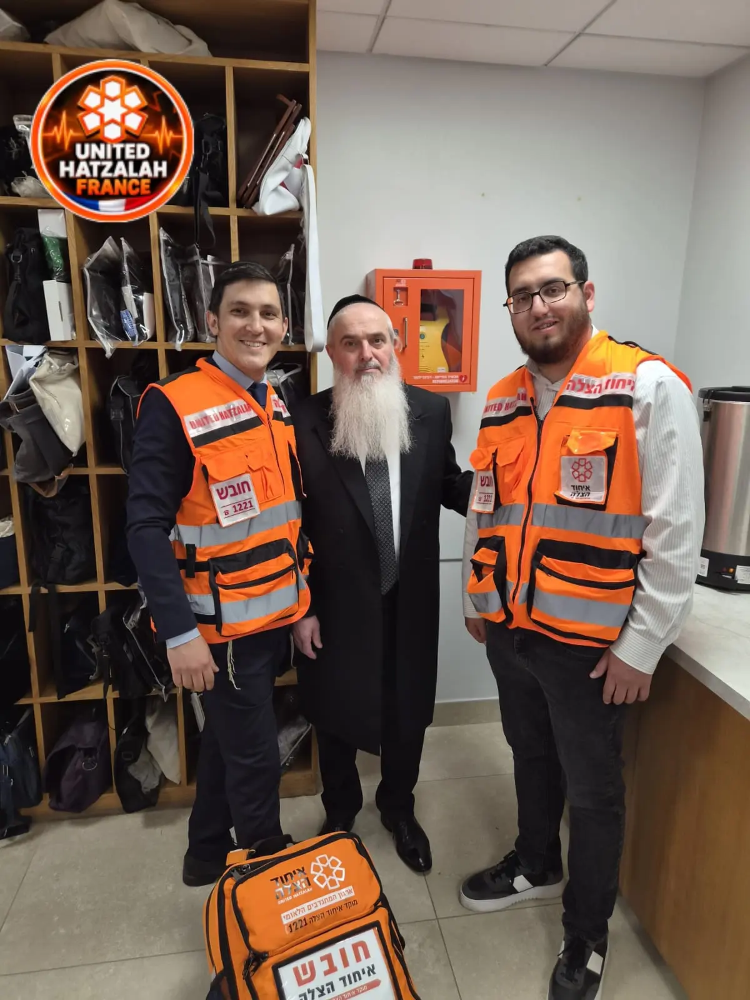

Gala de Paris 2026 : rendez-vous le 22 novembre pour soutenir les secouristes
Le dîner de gala annuel United Hatzalah se tiendra le dimanche 22 novembre 2026 à l’Hôtel du Collectionneur, avec Noam Bettan et Elie Chouraqui.
Lire l’article →Interventions, mobilisation des secouristes et projets soutenus par les donateurs : découvrez la vie de notre organisation.
Formation, prévention, engagement des bénévoles et vie de notre équipe française : retrouvez nos articles de fond.
Le dîner de gala annuel United Hatzalah se tiendra le dimanche 22 novembre 2026 à l’Hôtel du Collectionneur, avec Noam Bettan et Elie Chouraqui.
Lire l’article →
Des secouristes bénévoles de United Hatzalah France ont participé à l’encadrement de la Hiloula de Ra’hel Iménou au Centre culturel Patrick et Lina Drahi.
Lire l’article →
Découvrez en images les scooters de secours United Hatzalah France, équipés et identifiables grâce à leur livrée orange et leur matériel embarqué.
Lire l’article →
Retour sur la présence des bénévoles United Hatzalah France en tenue d’intervention lors du concert de Hanan Ben Ari, le 8 juin 2026.
Lire l’article →
La première promotion de bénévoles formés en France franchit une étape symbolique : retour en images sur la remise des diplômes du 12 mai 2026.
Lire l’article →
Découvrez l’équipe qui coordonne United Hatzalah France en 2026 : direction, relations donateurs et développement des projets de secours.
Lire l’article →Une formation exigeante et progressive : retour sur le programme de 200 heures, les qualifications de premiers secours et la reprise d’octobre 2026.
Lire l’article →
United Hatzalah France accompagne le déploiement de défibrillateurs automatiques externes dans des lieux communautaires, notamment à Saint-Mandé et Gagny.
Lire l’article →Retour sur les actions de proximité de United Hatzalah France lors d’événements communautaires, dont le salon Alloj du 11 octobre 2026.
Lire l’article →United Hatzalah France vous donne rendez-vous à l’Hôtel du Collectionneur pour une soirée dédiée à la solidarité et aux secouristes.
Réserver pour le galaRetrouvez les publications et les images de notre mission sur Facebook et Instagram.